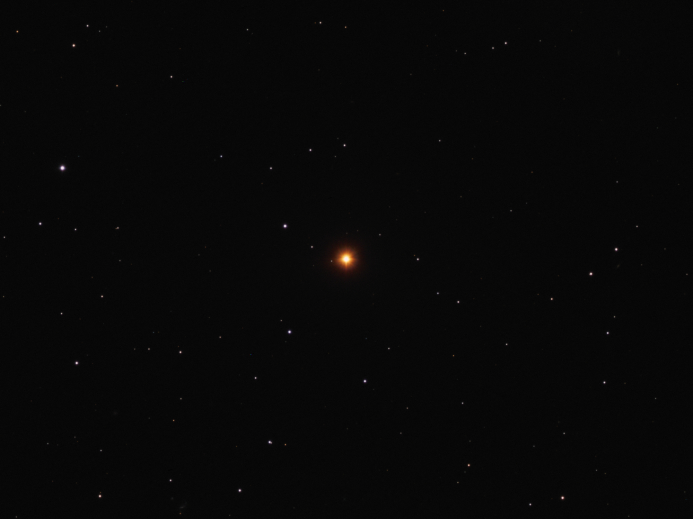

A star is classified as a carbon star when its atmosphere contains more carbon than oxygen by number (C/O > 1). In ordinary cool giants, the reverse holds: oxygen is more abundant, and the surplus oxygen binds into titanium oxide (TiO), producing the characteristic molecular bands of M-type giants. When C/O exceeds unity, all available oxygen is locked into carbon monoxide and the surplus carbon is free to form C₂, CN, CH, and silicon carbide (SiC). These molecules produce a rich absorption spectrum — including the Swan bands of C₂ — and absorb blue and green light so strongly that carbon stars appear among the reddest objects in the sky.

David Ritter / Wikimedia Commons (CC BY-SA 4.0)
{kind=link}
Formation on the Asymptotic Giant Branch
Most carbon stars are low-to-intermediate mass stars (1–8 M⊙) ascending the red giant asymptotic giant branch (AGB). On the AGB, a helium-burning shell beneath a thick hydrogen envelope undergoes recurrent thermal pulses — helium shell flashes — separated by roughly 10⁴–10⁵ years. Each flash drives a convective episode known as the third dredge-up, which carries carbon produced by the triple-alpha process from the core into the outer envelope. After sufficient dredge-up episodes, the envelope C/O ratio crosses unity and the star becomes a carbon star. This evolution follows the spectral sequence M-type (C/O < 1) → S-type (C/O ≈ 1) → carbon star (C/O > 1), a progression observable through changes in spectral classification.
Spectral Sub-types
The revised Harvard spectral classification scheme, updated by Keenan in 1993, recognises several C sub-types. C-N stars are the classical, coolest carbon stars (2,600–3,100 K), typically enhanced in s-process elements. C-R stars are warmer (2,800–5,100 K) and their origin remains debated; they show lower luminosity and are not generally thought to be AGB objects. C-J stars are distinguished by strong ¹³C isotope bands and may have an unusual nucleosynthesis history. C-H stars are metal-poor binary systems whose carbon enrichment came from mass transfer from an AGB companion that has since evolved into a white dwarf; they are closely related to barium stars. The rare C-Hd sub-type is hydrogen-deficient.
Nucleosynthesis and Mass Loss
Carbon stars are important sites of slow neutron-capture (s-process) nucleosynthesis. Neutrons released by the ¹³C(α,n)¹¶O reaction build elements from iron seed nuclei up to lead and bismuth, which the third dredge-up then deposits in the envelope. Intense dust-driven stellar winds (5–30 km s⁻¹) carry mass-loss rates of 10⁻⁸ to 10⁻⁴ M⊙ yr⁻¹ into the surrounding interstellar medium, seeding it with amorphous carbon, SiC dust grains, and polycyclic aromatic hydrocarbons. At the end of the AGB, the envelope is expelled entirely as a planetary nebula, leaving the former core as a white dwarf.
Notable Examples
Y Canum Venaticorum (La Superba) is among the brightest and reddest carbon stars accessible to the naked eye; classified C-J, it has an effective temperature of approximately 2,760 K and luminosity near 4,400 L⊙. R Leporis (Hind’s Crimson Star) is a C-N Mira-type variable star with a pulsation period of 427 days and a colour that deepens noticeably at minimum light. CW Leonis (IRC+10216), roughly 400 light-years distant, is the brightest carbon star at infrared wavelengths and is surrounded by an extensive shell of ejected material. The Gaia Data Release 3 catalogue identified 43,574 carbon star candidates, providing the first large-scale systematic census of this population across the Milky Way. The sub-class was first recognised spectroscopically by Angelo Secchi in the 1860s and later formalised in the Harvard R and N classification scheme, which was subsequently merged into the unified C system.